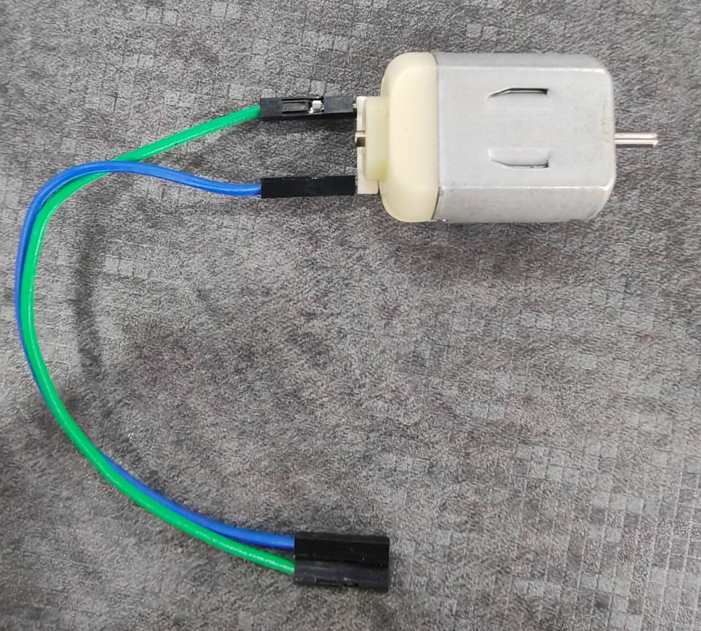
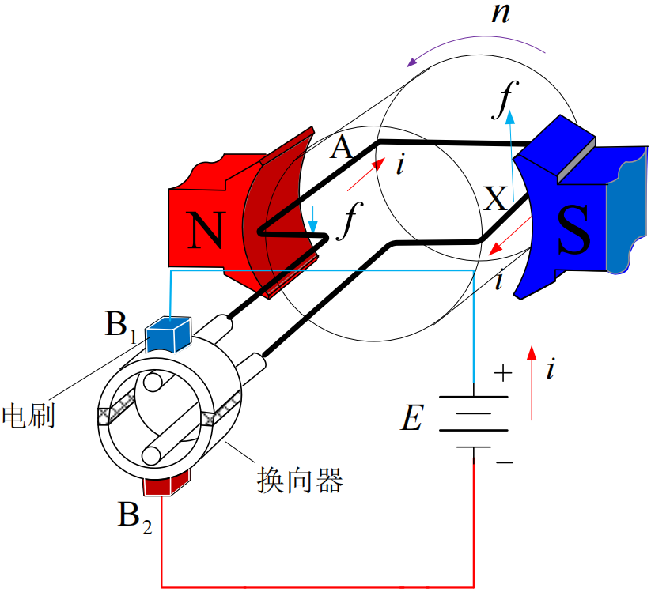
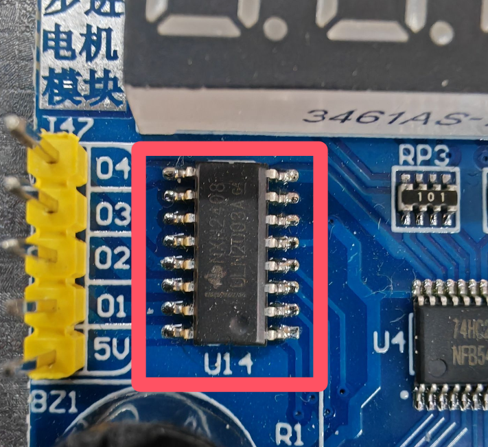
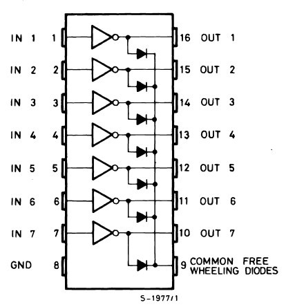
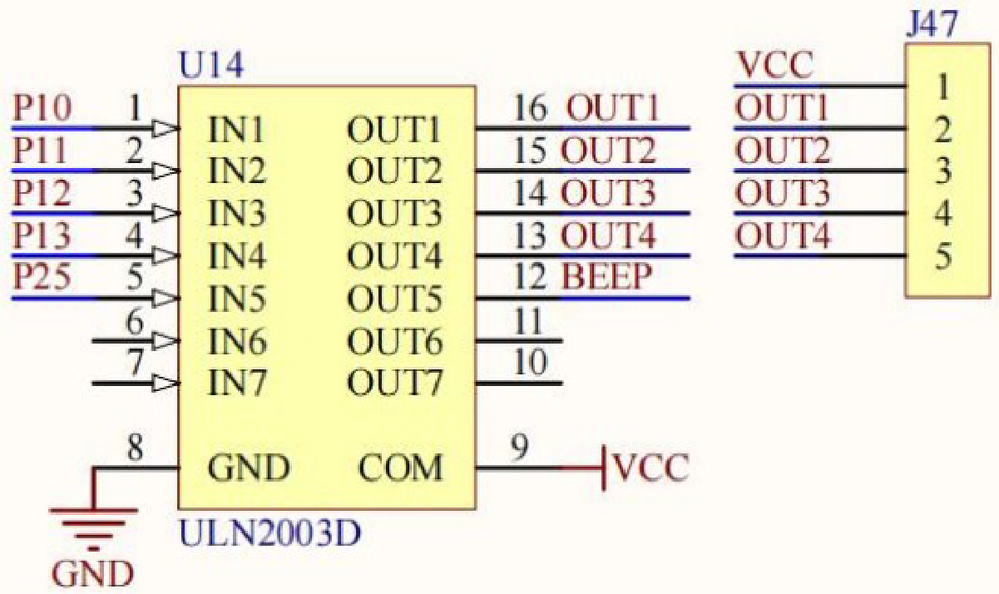
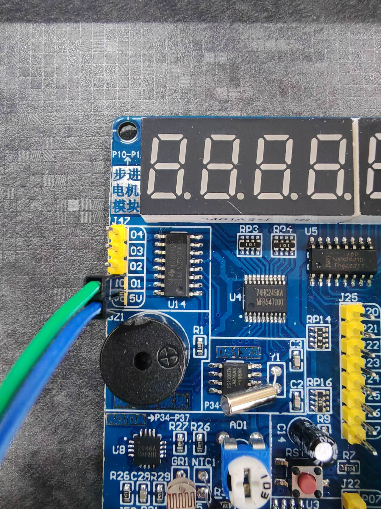
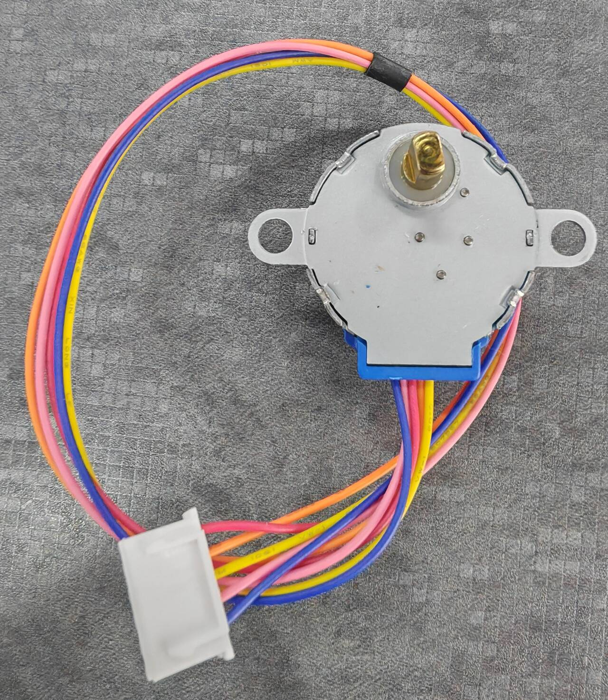
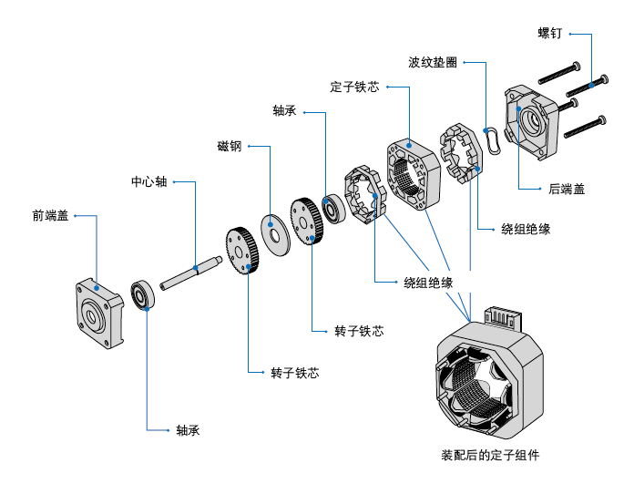
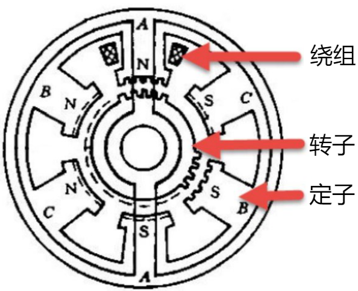
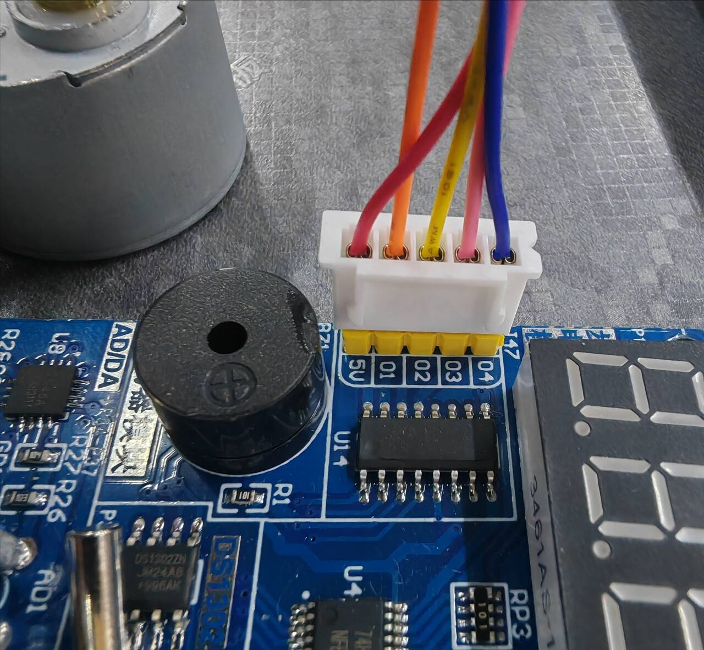

程序实验9&10.直流电机-步进电机
直流电机
直流电机介绍
直流电机是指能将直流电能转换成机械能（直流电动机）或将机械能转换成直流电能（直流发电机）的旋转电机。



直流电机没有正负极之分，在电机两端加上直流电即可工作，不同的正负极接法决定电机的旋转方向。直流电机有额定电压和额定功率，无法长时间超额工作。
ULN2003芯片介绍
ULN2003是一种用于驱动大功率器件的芯片，如果直接用单片机的GPIO管脚驱动大功率器件则芯片会烧坏或无法驱动。


ULN2003芯片是高耐压、大电流复合晶体管阵列，由七对npn的达林顿管组成，可以驱动电机、继电器、灯等器件。单个独立达林顿管的集电极电流为500mA，在关态时能承受50V的电压，输出可以在高负载电流并行运行。
ULN2003芯片有七对输入输出引脚，GND脚接地，COM脚接达林顿管的公共端电源。由于ULN2003为漏极开路电路，在没有上拉电阻的情况下输出端处于高阻态无法输出高电平，因此电机需通过一端接在VCC电源，另一端接在低电平输出端实现驱动。如果有上拉电阻则可以通过一端输出高电平一端输出低电平驱动电机。
硬件设计

普中A2-A4开发板中ULN2003芯片前五个输入管脚与单片机连接，一个输出管脚控制蜂鸣器，四个输出管脚和电源管脚通过排针引出，以便于连接电机。电机接线如下：

实验9 直流电机
实现功能：直流电机工作约5s后停止
1
2
3
4
5
6
7
8
9
10
11
12
13
14
15
16
17
18
19
20
21
22
23
24
25
|
#include "reg52.h"
typedef unsigned char u8;
typedef unsigned int u16;
//电机连接哪个输出脚则定义哪个为电机控制口
sbit DC_Motor = P1^0;
//以毫秒为单位的延时函数
void delay_ms(u16 ms)
{
u16 i, j;
for(i = ms;i > 0;i--)
for(j = 110;j > 0;j--);
}
void main()
{
//ULN2003芯片内部相当于非门，输入高电平则输出低电平
DC_Motor = 1;
//延时5秒
delay_ms(5000);
//输入低电平，输出高阻态
DC_Motor = 0;
}
|
冷启动烧录程序时，先烧录再连接外接设备。
步进电机
步进电机介绍
步进电机是将电脉冲信号转变为角位移或线位移的开环控制元件，电机的转速和停止位置取决于脉冲信号的频率和脉冲数，一个脉冲信号使步进电机旋转一个步距角。


步进电机的工作原理

步进电机的转子通常为永磁体，当电流流过定子会产生矢量磁场带动转子旋转一定的角度使转子的方向与磁场的方向保持一致，电流的方向决定旋转的方向。
步进电机的极性

上图左侧为单极性步进电机，右侧为双极性步进电机。单双极性是指一个步进电机里面有几种电流流向
双极性步进电机驱动原理

上图中，A+A-、B+B-各自控制两个方向的磁极。根据右手螺旋定定则可得，高电平一端为S极，低电平一端为N极。左侧1234通过单相激励（一对磁极工作另一对磁极不工作）实现水平和竖直的四个方向的旋转，右侧1234通过双相激励（两对磁极同时工作）实现四个45°斜方向的旋转。两者结合后可以实现步距角45°的控制。
单极性步进电机驱动原理

单极性有一个公共端VCC和四根相线，电流方向是固定的。公共端是一直通电的，四根相线对每一根通电都可以得到该方向上的S极磁场。左侧为单向激励，右侧为双向激励，两者结合后可以实现步距角45°的控制。公共端为高电平，对哪一相通电则将哪一相输入低电平，其余相输入高电平。
细分驱动原理

如果要进一步缩小步距角，可以在双相激励时分别控制两相的电流大小进而实现磁场的细微变化，哪一相电流更强则转子更偏向哪一相。该方面控制由电机中的一种专门的驱动器执行。
步进电机的技术指标
静态技术指标
相数：步进电机线圈的组数。
拍数：完成一个磁场周期变化所需要的脉冲数。
步距角：一个脉冲信号引起电机旋转的角度。
定位转矩：电机在不通电状态下转轴的锁定力矩。
静转矩：电机在额定静态电压工作下不作旋转运动时转轴的锁定力矩。
动态技术指标
步距角精度：步距角实际值和理论值之间的误差百分比。
失步：电机旋转步数小于理论步数，一般由负载过大或频率过快引起。
失调角：转子磁轴与定子磁轴之间的角度。
最大空载起动频率：电机在不加负载的条件下能够直接起动的最大频率。
最大空载运行频率：电机在不加负载的条件下最高的转速频率。
运行转矩特性：电机运行转矩取决于平均电流而不是静态电流，平均电流越大运行转矩越大。
电机正反转控制：通过改变线圈通电方向改变电机的正反转。
28BYJ-48步进电机简介
本实验用到的步进电机为28BYJ-48步进电机，为五线四相单极性步进电机。

工作通电顺序（GND即设为低电平）：
| 导线颜色 |
第1步 |
第2步 |
第3步 |
第4步 |
第5步 |
第6步 |
第7步 |
第8步 |
| VCC 红 |
5V |
5V |
5V |
5V |
5V |
5V |
5V |
5V |
| D 橙 |
GND |
GND |
|
|
|
|
|
GND |
| C 黄 |
|
GND |
GND |
GND |
|
|
|
|
| B 粉 |
|
|
|
GND |
GND |
GND |
|
|
| A 蓝 |
|
|
|
|
|
GND |
GND |
GND |
电机指标：
| 电机型号 |
电压(V) |
相数 |
相电阻(Ω) |
步进角度 |
减速比 |
100PPS起动转矩(g·cm) |
起动频率(PPS) |
定位转矩(g·cm) |
绝缘耐压(VAC/s) |
| 28BYJ48 |
5 |
4 |
300 |
5.625/64 |
1:64 |
≥300 |
≥500 |
≥300 |
600 |
硬件设计
步进电机硬件控制部分与直流电机相同，红线接在VCC针，其余四线接在四个输出针。

实验10 步进电机
实现功能：通过ULN2003驱动模块控制28BYJ48步进电机运行方向及速度，当按下KEY1键可调节电机旋转方向，当按下KEY2键电机加速，当按下KEY3键电机减速。
1
2
3
4
5
6
7
8
9
10
11
12
13
14
15
16
17
18
19
20
21
22
23
24
25
26
27
28
29
30
31
32
33
34
35
36
37
38
39
40
41
42
43
44
45
46
47
48
49
50
51
52
53
54
55
56
57
58
59
60
61
62
63
64
65
66
67
68
69
70
71
72
73
74
75
76
77
78
79
80
81
82
83
84
85
86
87
88
89
90
91
92
93
94
95
96
97
98
99
100
101
102
103
104
105
106
107
108
109
110
111
|
#include "reg52.h"
typedef unsigned char u8;
typedef unsigned int u16;
//定义步进电机的四个输入端口
sbit IN1_D = P1^0;
sbit IN1_C = P1^1;
sbit IN1_B = P1^2;
sbit IN1_A = P1^3;
//定义四个独立按键
sbit KEY1 = P3^1;
sbit KEY2 = P3^0;
sbit KEY3 = P3^2;
sbit KEY4 = P3^3;
//宏定义步进电机的速度范围（速度实际为脉冲延时长度，故值越大越慢）
#define STEPMOTOR_MAXSPEED 1
#define STEPMOTOR_MINSPEED 5
//毫秒延时函数
void delay_ms(u16 ms)
{
u16 i, j;
for(i = ms;i > 0;i--)
for(j = 110;j > 0;j--);
}
//按键扫描函数（见实验3）
u8 key_scan(u8 mode)
{
static u8 key = 1;
if(mode)
key = 1;
if(key == 1 && (KEY1 == 0 || KEY2 == 0 || KEY3 == 0 || KEY4 == 0))
{
key = 0;
delay_ms(20);
if(KEY1 == 0)
return 1;
else if(KEY2 == 0)
return 2;
else if(KEY3 == 0)
return 3;
else if(KEY4 == 0)
return 4;
}
else if(KEY1 == 1 && KEY2 == 1 && KEY3 == 1 && KEY4 == 1)
{
key = 1;
}
return 0;
}
//步进电机脉冲发送函数，第一个参数为步数序号，第二个参数控制旋转方向，1顺时针0逆时针
void step_motor_28BYJ48_send_pulse(u8 step, u8 dir)
{
//存储步数序号的变量
u8 temp = step;
//如果为逆时针则
if(dir == 0)
temp = 7 - step;
//根据步数序号控制相应端口的电平（参照工作通电顺序表），由于ULN芯片非门作用故取反
switch(temp)
{
case 0: IN1_A = 0;IN1_B = 0;IN1_C = 0;IN1_D = 1;break;
case 1: IN1_A = 0;IN1_B = 0;IN1_C = 1;IN1_D = 1;break;
case 2: IN1_A = 0;IN1_B = 0;IN1_C = 1;IN1_D = 0;break;
case 3: IN1_A = 0;IN1_B = 1;IN1_C = 1;IN1_D = 0;break;
case 4: IN1_A = 0;IN1_B = 1;IN1_C = 0;IN1_D = 0;break;
case 5: IN1_A = 1;IN1_B = 1;IN1_C = 0;IN1_D = 0;break;
case 6: IN1_A = 1;IN1_B = 0;IN1_C = 0;IN1_D = 0;break;
case 7: IN1_A = 1;IN1_B = 0;IN1_C = 0;IN1_D = 1;break;
}
}
void main()
{
u8 key = 0; //存储按键值变量
u8 dir = 0; //转动方向控制变量
u8 step = 0; //步数序号控制变量
u8 speed = 1; //速度控制变量
while(1)
{
key = key_scan(0); //扫描按键
if(key == 1)
{
dir = !dir; //KEY1对转动方向取反
}
else if(key == 2)
{
//KEY2加速
if(speed > STEPMOTOR_MAXSPEED)speed--;
}
else if(key == 3)
{
//KEY3减速
if(speed < STEPMOTOR_MINSPEED)speed++;
}
//输出脉冲信号，step++先传入step参数再对step加一
step_motor_28BYJ48_send_pulse(step++, dir);
//执行一个周期后重置步数序号
if(step == 8)step = 0;
//延时控制转速
delay_ms(speed);
}
}
|
本篇完